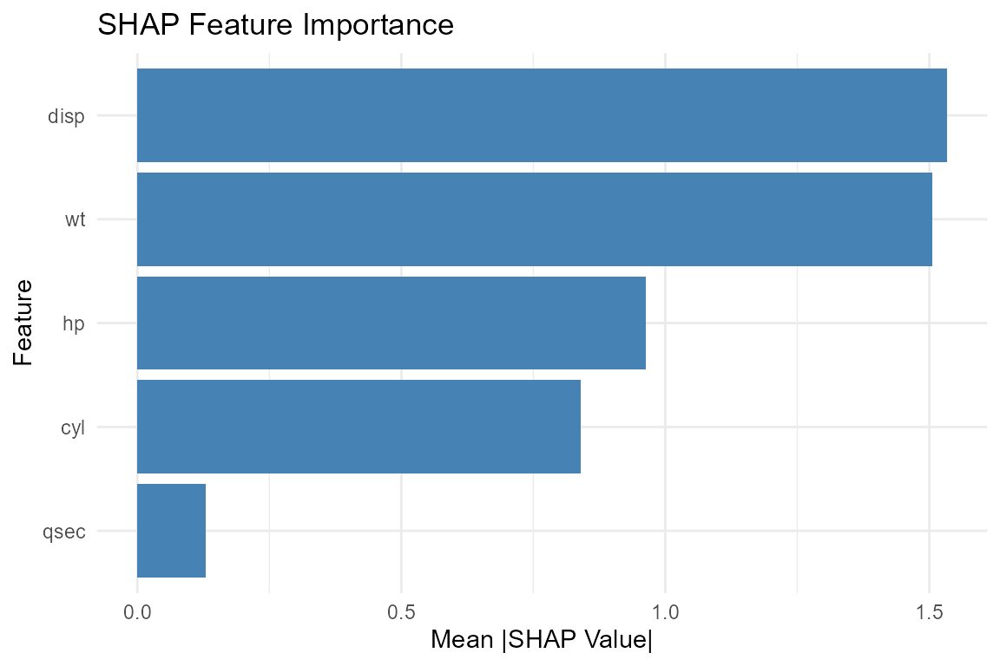
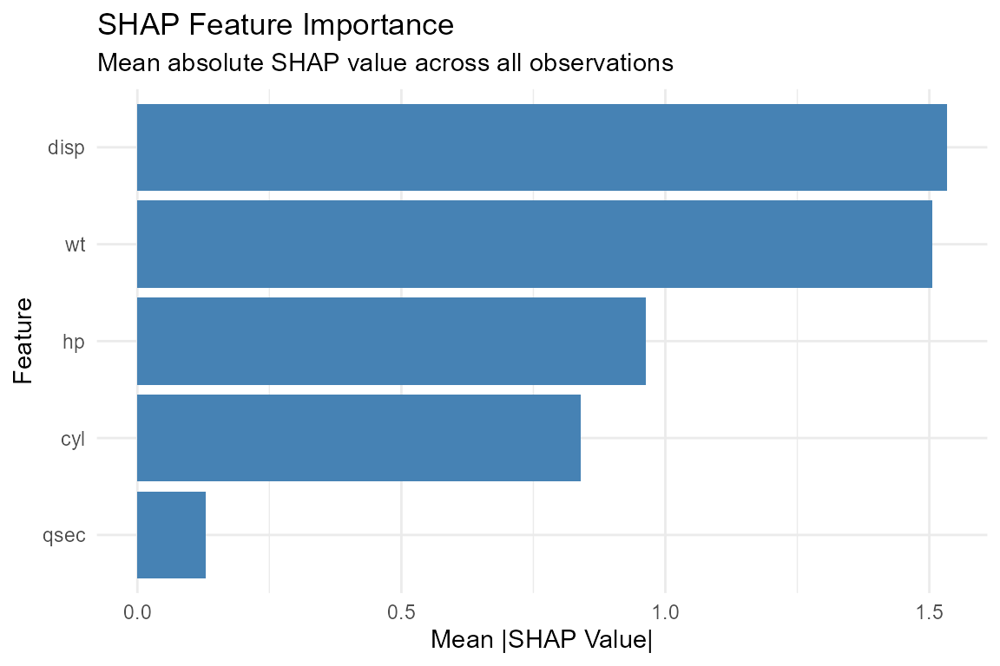
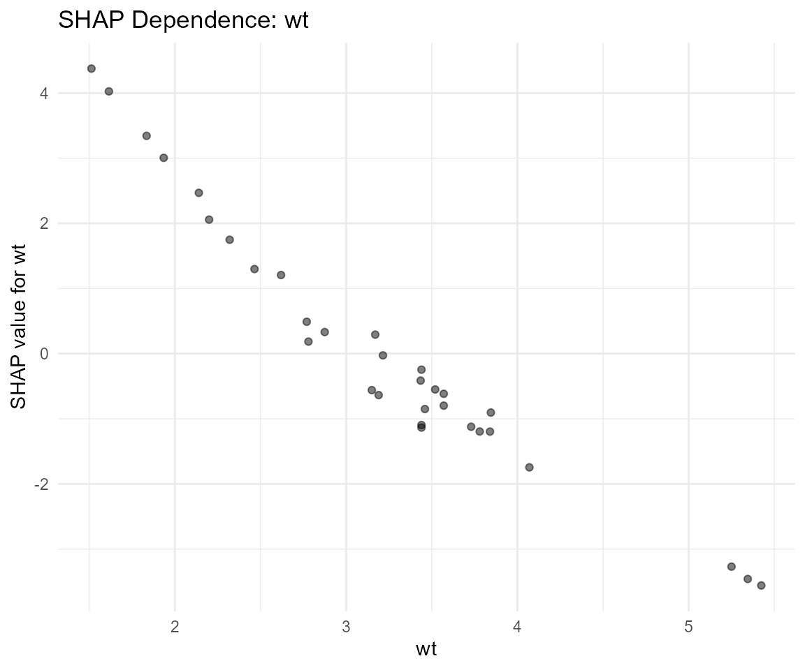
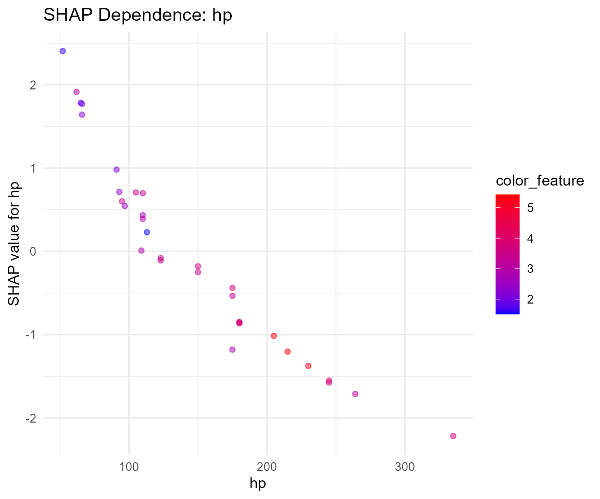
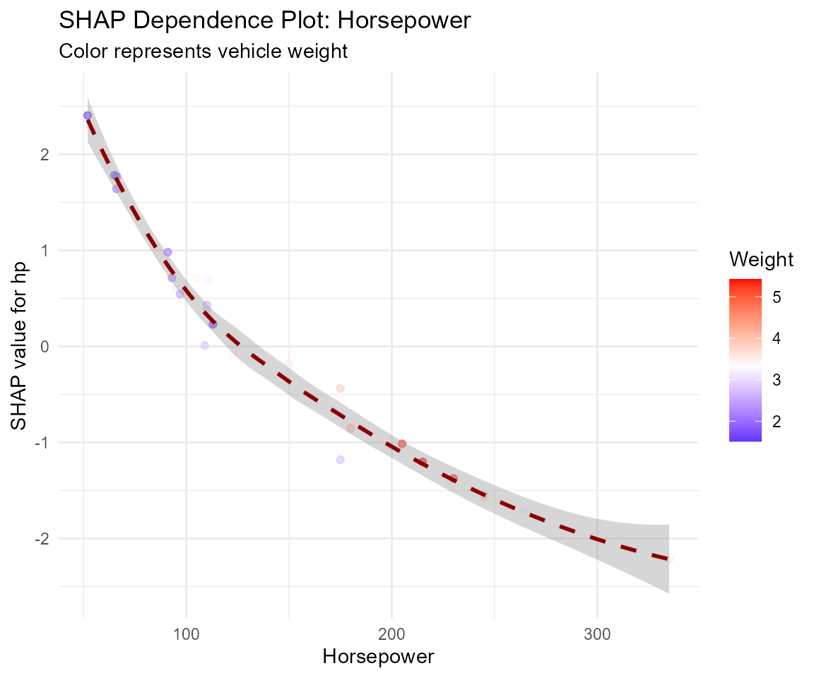
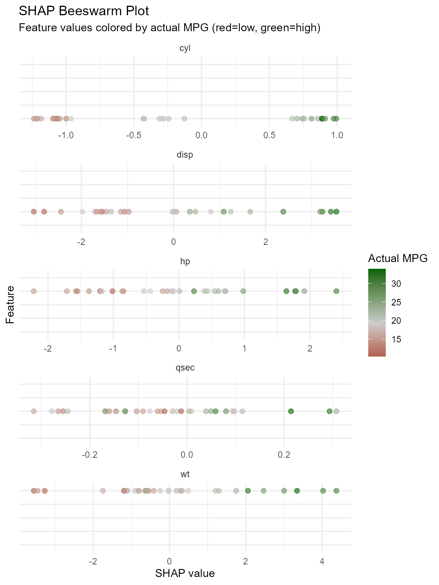
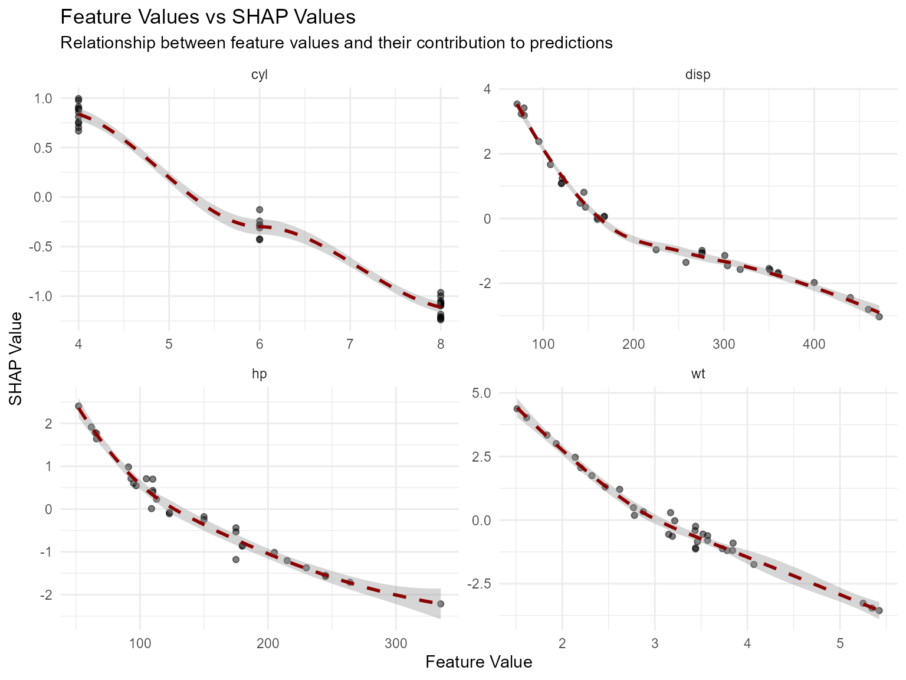
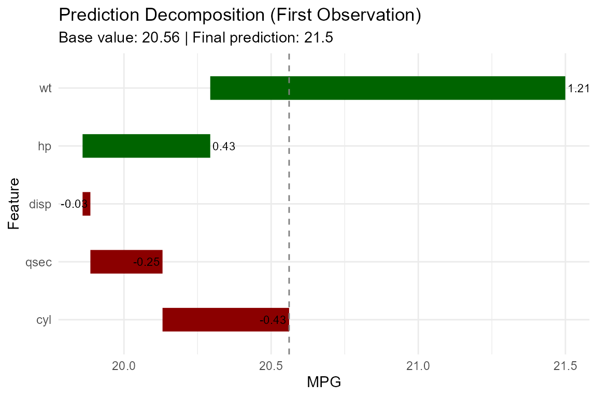
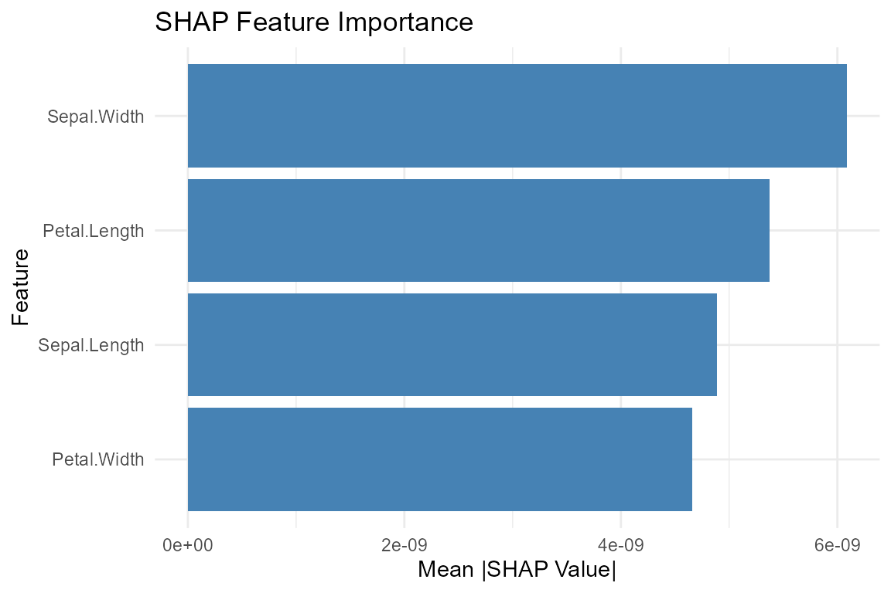

Introduction
SHAP (SHapley Additive exPlanations) is a game-theoretic approach to
explain the output of machine learning models. The rtabpfn
package integrates SHAP functionality through the
tabpfn-extensions library, allowing you to interpret TabPFN
predictions at both global and local levels.
Setup
First, ensure the Python environment is configured with tabpfn-extensions:
Load required packages:
##
## Attaching package: 'dplyr'## The following objects are masked from 'package:stats':
##
## filter, lag## The following objects are masked from 'package:base':
##
## intersect, setdiff, setequal, unionTraining a Model
Let’s train a regression model on the mtcars dataset and
compute SHAP values:
# Load data
data(mtcars)
# Prepare predictors and response
X <- mtcars[, c("cyl", "disp", "hp", "wt", "qsec")]
y <- mtcars$mpg
# Train model
model <- tab_pfn_regression(X, y, device = "auto")
# Make predictions for comparison
preds <- predict(model, X, type = "numeric")Computing SHAP Values
Compute SHAP values for all observations:
# Calculate SHAP values
shap_vals <- shap_values(model, X, verbose = TRUE)## Calculating SHAP values for TabPFN model...
## Input data dimensions: 32 x 5
## Column names and types:
## cyl : numeric
## disp : numeric
## hp : numeric
## wt : numeric
## qsec : numeric
## Importing SHAP function from tabpfn_extensions.interpretability.shap...
## Checking model object type...
## object$fit type: tabpfn.regressor.TabPFNRegressor sklearn.base.RegressorMixin sklearn.base.BaseEstimator sklearn.utils._estimator_html_repr._HTMLDocumentationLinkMixin sklearn.utils._metadata_requests._MetadataRequester python.builtin.object
## object$fit has predict method: TRUE
## Converting data to pandas DataFrame...
## Created pandas DataFrame with shape: 32 5
## DataFrame dtypes:
## cyl : float64
## disp : float64
## hp : float64
## wt : float64
## qsec : float64
## Computing SHAP values...
## Calling get_shap_values with fit object and DataFrame...
## Sample of data:
## cyl disp hp wt qsec
## 1 6 160 110 2.62 16.46
## Done! SHAP shape: 32 x 5
head(shap_vals)## # A tibble: 6 × 7
## observation cyl disp hp wt qsec .base_value
## <chr> <dbl> <dbl> <dbl> <dbl> <dbl> <dbl[1d]>
## 1 .obs_1 -0.430 -0.0265 0.434 1.21 -0.245 20.6
## 2 .obs_2 -0.423 0.0268 0.391 0.331 -0.145 20.6
## 3 .obs_3 0.704 1.67 0.713 1.75 0.0391 20.6
## 4 .obs_4 -0.127 -1.36 0.699 -0.0265 0.0975 20.6
## 5 .obs_5 -1.07 -1.71 -0.533 -0.246 -0.167 20.6
## 6 .obs_6 -0.243 -0.965 0.708 -0.850 0.0932 20.6Global Feature Importance
Feature Importance Plot
# Plot SHAP summary
p1 <- plot_shap_summary(shap_vals, top_n = 5)
print(p1)
Manual Feature Importance
# Calculate mean absolute SHAP values
feature_cols <- setdiff(names(shap_vals), c("observation", ".base_value"))
importance_df <- shap_vals %>%
pivot_longer(cols = all_of(feature_cols),
names_to = "feature",
values_to = "shap_value") %>%
group_by(feature) %>%
summarise(
mean_abs_shap = mean(abs(shap_value)),
mean_shap = mean(shap_value),
.groups = "drop"
) %>%
arrange(desc(mean_abs_shap))
print(importance_df)## # A tibble: 5 × 3
## feature mean_abs_shap mean_shap
## <chr> <dbl> <dbl>
## 1 disp 1.53 -0.119
## 2 wt 1.51 0.0451
## 3 hp 0.963 -0.0358
## 4 cyl 0.839 -0.264
## 5 qsec 0.129 -0.0439
# Plot
ggplot(importance_df, aes(x = reorder(feature, mean_abs_shap), y = mean_abs_shap)) +
geom_col(fill = "steelblue") +
coord_flip() +
labs(title = "SHAP Feature Importance",
subtitle = "Mean absolute SHAP value across all observations",
x = "Feature",
y = "Mean |SHAP Value|") +
theme_minimal()
Local Explanations
Explaining Individual Predictions
# Explain first observation
explanation <- explain_prediction(model, X[1, , drop = FALSE])
print(explanation)## === SHAP Explanation ===
##
## Prediction: 21.4995
## Base value: 20.5611
##
## Top feature contributions:
## wt: +1.2064 (feature value: 2.62)
## hp: +0.4338 (feature value: 110.00)
## cyl: -0.4302 (feature value: 6.00)
## qsec: -0.2451 (feature value: 16.46)
## disp: -0.0265 (feature value: 160.00)SHAP Dependence Plots
# SHAP dependence for 'wt' (weight)
p2 <- plot_shap_dependence(shap_vals, X, feature = "wt")
print(p2)
# SHAP dependence with color feature
p3 <- plot_shap_dependence(shap_vals, X, feature = "hp", color_feature = "wt")
print(p3)
Manual Dependence Plot
# Manual dependence plot for 'hp'
dep_df <- data.frame(
feature_value = X$hp,
shap_value = shap_vals$hp,
color_feature = X$wt
)
ggplot(dep_df, aes(x = feature_value, y = shap_value)) +
geom_point(aes(color = color_feature), alpha = 0.6) +
geom_smooth(method = "loess", se = TRUE, color = "darkred", linetype = "dashed") +
scale_color_gradient2(low = "blue", mid = "white", high = "red",
midpoint = median(dep_df$color_feature)) +
labs(title = "SHAP Dependence Plot: Horsepower",
subtitle = "Color represents vehicle weight",
x = "Horsepower",
y = "SHAP value for hp",
color = "Weight") +
theme_minimal()
Visualizing Feature Effects
Beeswarm Plot
# Create beeswarm-style plot
beeswarm_df <- shap_vals %>%
pivot_longer(cols = all_of(feature_cols),
names_to = "feature",
values_to = "shap_value") %>%
left_join(data.frame(observation = shap_vals$observation,
actual_mpg = y,
predicted_mpg = preds$.pred),
by = "observation")
ggplot(beeswarm_df, aes(x = shap_value, y = reorder(feature, shap_value, mean), color = actual_mpg)) +
geom_point(alpha = 0.6, size = 2) +
scale_color_gradient2(low = "darkred", mid = "gray80", high = "darkgreen",
midpoint = median(y)) +
facet_wrap(~ feature, scales = "free_x", ncol = 1) +
labs(title = "SHAP Beeswarm Plot",
subtitle = "Feature values colored by actual MPG (red=low, green=high)",
x = "SHAP value",
y = "Feature",
color = "Actual MPG") +
theme_minimal() +
theme(strip.text.y = element_blank(),
axis.text.y = element_blank())
Feature Value vs SHAP
# Plot feature values against SHAP values for top features
top_features <- importance_df$feature[1:4]
shap_feature_df <- purrr::map_dfr(top_features, function(feat) {
data.frame(
feature = feat,
feature_value = X[[feat]],
shap_value = shap_vals[[feat]]
)
})
ggplot(shap_feature_df, aes(x = feature_value, y = shap_value)) +
geom_point(alpha = 0.5, size = 1.5) +
geom_smooth(method = "loess", se = TRUE, color = "darkred", linetype = "dashed") +
facet_wrap(~ feature, scales = "free", ncol = 2) +
labs(title = "Feature Values vs SHAP Values",
subtitle = "Relationship between feature values and their contribution to predictions",
x = "Feature Value",
y = "SHAP Value") +
theme_minimal()
Interaction Effects
Two-Way Interaction Plot
# Interaction between hp and wt
interaction_df <- data.frame(
hp = X$hp,
wt = X$wt,
hp_shap = shap_vals$hp,
wt_shap = shap_vals$wt
)
ggplot(interaction_df, aes(x = hp, y = wt)) +
geom_point(aes(color = hp_shap), size = 3, alpha = 0.7) +
scale_color_gradient2(low = "blue", mid = "white", high = "red") +
geom_point(aes(shape = wt_shap > 0), size = 2) +
scale_shape_manual(values = c("FALSE" = 1, "TRUE" = 16)) +
labs(title = "Interaction: Horsepower vs Weight",
subtitle = "Color = HP SHAP value | Shape = WT SHAP direction (open=negative, filled=positive)",
x = "Horsepower",
y = "Weight",
color = "HP SHAP Value",
shape = "WT SHAP Direction") +
theme_minimal()
Prediction Decomposition
Waterfall-style Decomposition
# Decompose prediction for first observation
obs_idx <- 1
feat_cols <- setdiff(names(shap_vals), c("observation", ".base_value"))
decomp_df <- data.frame(
feature = feat_cols,
shap_value = shap_vals[obs_idx, feat_cols] %>% unlist(),
feature_value = X[obs_idx, feat_cols] %>% unlist()
) %>%
mutate(base_value = shap_vals$.base_value[obs_idx]) %>%
arrange(shap_value) %>%
mutate(
y_pos = base_value + cumsum(lag(shap_value, default = 0)),
y_end = y_pos + shap_value,
label_pos = ifelse(shap_value > 0, y_end, y_pos)
)
ggplot(decomp_df, aes(x = reorder(feature, shap_value))) +
geom_segment(aes(xend = feature, y = y_pos, yend = y_end),
color = ifelse(decomp_df$shap_value > 0, "darkgreen", "darkred"),
linewidth = 8) +
geom_text(aes(y = label_pos, label = round(shap_value, 2)),
hjust = ifelse(decomp_df$shap_value > 0, -0.1, 1.1),
size = 3) +
geom_hline(yintercept = decomp_df$base_value, linetype = "dashed", color = "gray50") +
coord_flip() +
labs(title = "Prediction Decomposition (First Observation)",
subtitle = paste("Base value:", round(decomp_df$base_value, 2),
"| Final prediction:", round(sum(decomp_df$shap_value) + decomp_df$base_value, 2)),
x = "Feature",
y = "MPG") +
theme_minimal() +
theme(axis.text.y = element_text(size = 9))
Summary of Findings
cat("=== SHAP Analysis Summary ===\n\n")## === SHAP Analysis Summary ===
cat("Top features by importance:\n")## Top features by importance:## # A tibble: 3 × 3
## feature mean_abs_shap mean_shap
## <chr> <dbl> <dbl>
## 1 disp 1.53 -0.119
## 2 wt 1.51 0.0451
## 3 hp 0.963 -0.0358
cat("\nFeature impact direction:\n")##
## Feature impact direction:
for (feat in importance_df$feature[1:3]) {
direction <- ifelse(importance_df$mean_shap[importance_df$feature == feat] > 0,
"positive", "negative")
cat(feat, "-", direction, "impact on average\n")
}## disp - negative impact on average
## wt - positive impact on average
## hp - negative impact on averageUsing with Classification
# Classification example with iris
data(iris)
X_cls <- iris[, c("Sepal.Length", "Sepal.Width", "Petal.Length", "Petal.Width")]
y_cls <- iris$Species
model_cls <- tab_pfn_classification(X_cls, y_cls, device = "auto")
# Get SHAP values (note: this explains the classification scores)
shap_cls <- shap_values(model_cls, X_cls[1:50, ], verbose = FALSE)
plot_shap_summary(shap_cls, top_n = 4)
Summary
SHAP explanations with TabPFN provide:
- Global interpretability: Understanding which features drive predictions overall
- Local interpretability: Explaining individual predictions
- Feature importance: Quantitative ranking of feature contributions
- Directional effects: Understanding whether features increase or decrease predictions
- Dependency visualization: Seeing how feature values relate to SHAP values
Key applications: - Model validation and debugging - Communicating model decisions to stakeholders - Feature selection and engineering - Understanding model behavior on specific cases